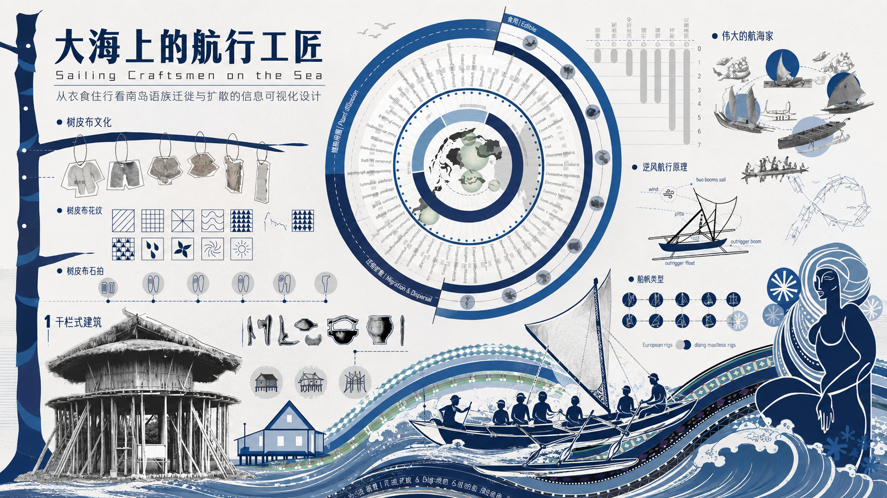
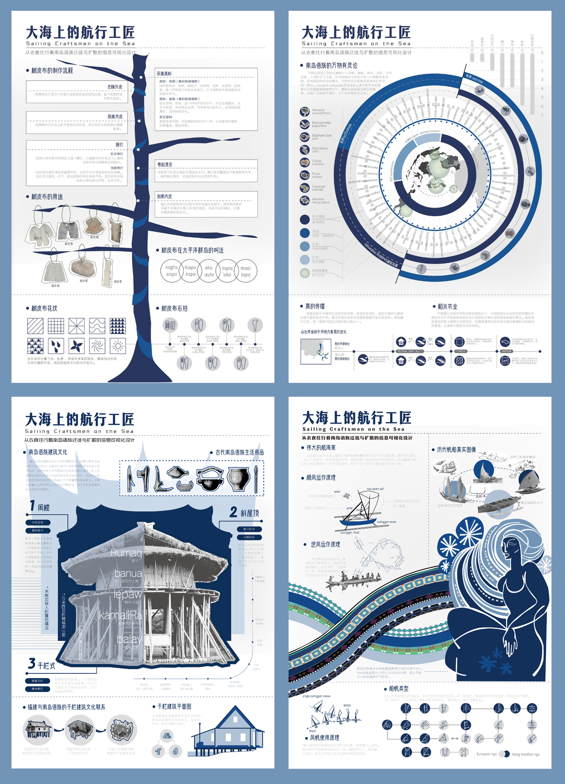
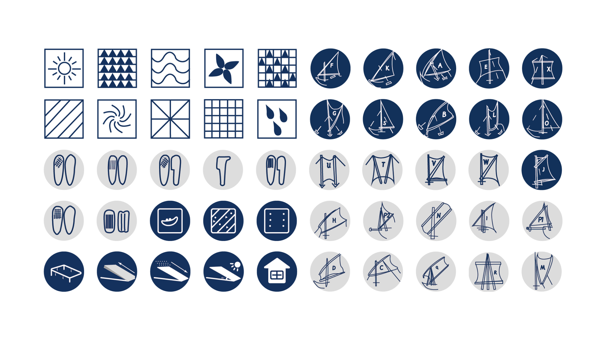

← 返回所有作品

PROJECT OVERVIEW / 项目概览
南岛语族迁徙与扩散的信息可视化设计
南岛语族迁徙与扩散的信息可视化设计是一项围绕南岛语族迁徙与扩散展开的信息可视化设计项目。项目以“衣、食、住、行”为线索，梳理树皮布文化、作物传播、干栏式建筑与航海技术等内容，通过信息图形、视觉符号与版式设计，呈现南岛语族跨海迁徙过程中形成的物质文化及其传播关系。
个人负责内容
主要负责项目的数据调研、信息分析和平面设计。围绕南岛语族迁徙与“衣、食、住、行”四个主题进行资料搜集与内容梳理，并参与信息可视化页面的视觉呈现与版式设计，将复杂的文化、历史及传播信息转化为更直观的图形化内容。

